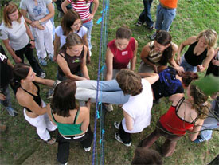
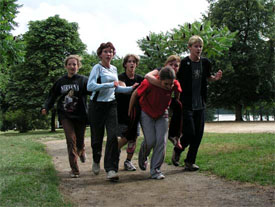

Kontakt:
Zuzana Ouhrabková
Koordinátorka projektu
(+420) 777 589 526
zdravevztahy@centrum.cz
Kalendáø:
Bøezen
6.3. 2007
Prezentace projektu
9-11.3.2007
zá�itková pedagogika live
20.3. 2007
Diagnostika skupiny
Duben
30.3.-1.4. 2007
Pracovní setkání
18-20.5.2007
Sprosté slovo tımbyldynk
Projekt podporují:


Partner projektu:

Tento projekt byl finanènì podpoøen Evropskou komisí. Tyto stránky odrá�í pouze postoje realizátorù projektu a Evropská komise ani Národní agentura nenese zodpovìdnost za její obsah ani za jakıkoliv zpùsob u�ití informací v nich obsa�enıch.
web & design by Zbych
http://zbysek.wosa.cz
Šikana? Módní slovo? Ka�dodenní realita?
Podle opakovanıch vızkumù se ka�dé tøetí dítì v Èeské republice stálo nìkdy na pozici obìti šikany. Nejde bohu�el o �ádné iracionální vıbuchy násilí, ale o dlouhodobı proces znièení zdravého ovzduší v mnoha bì�nıch tøídách.
V pøípadì �e se na riziko pøípadné šikany pøijde vèas, dá se vìtšinou zmìnit ledacos bez toho, aby se obìtem pøíliš ublí�ilo a aby agresoøi ztratili jakékoliv zábrany. Bìhem bì�ného školního vyuèování není moc èas na to, zabıvat se tím, jak fungují vztahy ve tøídì. Ostatnì nejlépe se vztahy tu�í tøeba na ly�ácích, vıletech a školách v pøírodì. Nebo ne?
Co tedy nabízíme?
Tøídám ohro�enım šikanou chceme umo�nit jet na takovı školní vılet, kterı nepovede k tomu, �e se pùl tøídy opije na školním záchodku,kde nebude povinná diskotéka, a ranní rozcvièka.
A kde namísto jasného rozlo�ení sil budou mít všichni co nejvìtší šanci najít si takovou pozici ve tøídì, která jim umo�ní fungovat beze strachu ze spolu�ákù.
Vılet kterı si všichni u�ijí a kterı pomù�e budovat zdravé vztahy. K sobì, k druhım, ke svìtu.
Pro koho je projekt urèen?
Pro tøídy základních a støedních škol a pro zájemce o práci s dìtmi ve vìku 15-25 let.
Co se bude dìlat?
Na bì�ném školním vıletì se nijak cílenì nepracuje se vztahy ve tøídì. Ostatnì pokud na jednu tøídu jede 1-2 uèitelé, nezbıvá na takovou èinnost síla, chu� a pøedevším èasto chybí zkušenosti a dovednosti, jak pøipravit takovı program, kterı by dìti neotrávil, neohrozil a navíc pomohl.
Díky finanèní podpoøe ÈNA jsme schopní zajistit tım vyškolenıch dobrovolníkù, kteøí doká�i rozpoznat problém, jeho pøíèiny a souvislosti a vytvoøit takovı program, kterı zajistí ozdravìní vztahù ve tøídì pøi maximální psychické bezpeènosti �ákù a studentù.